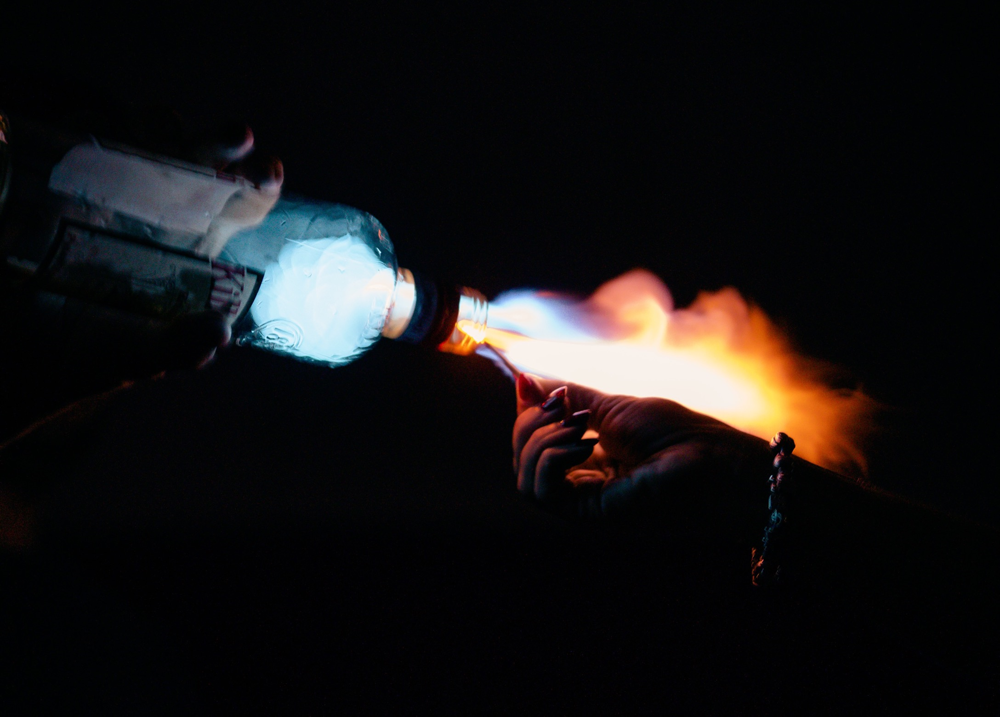
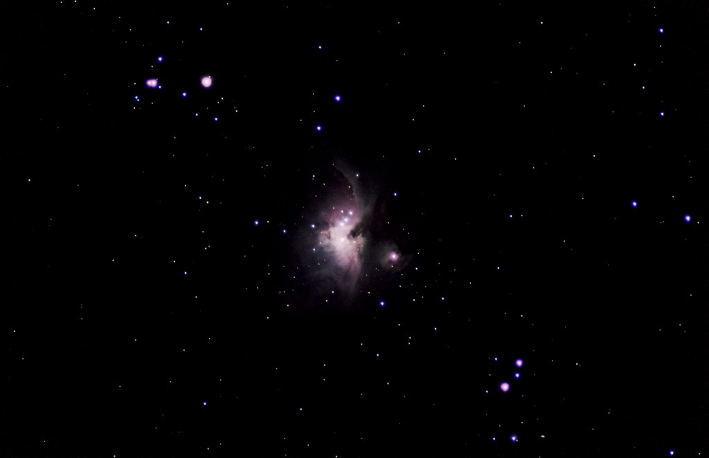
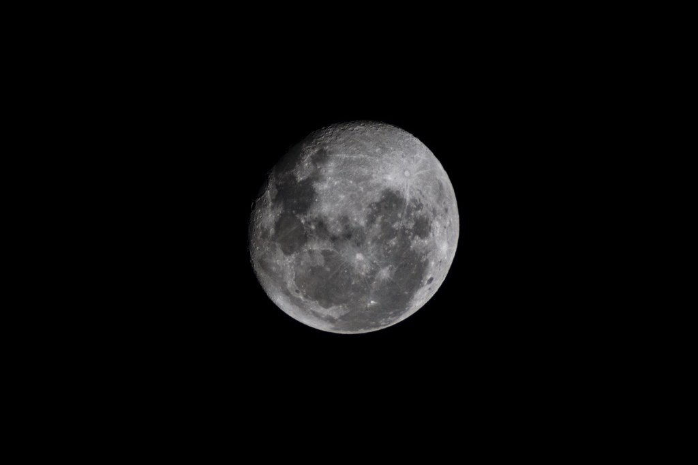
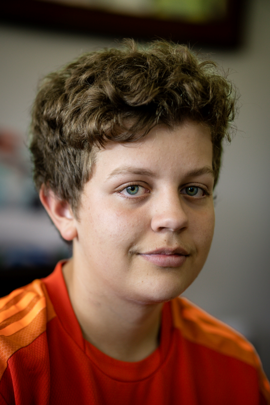
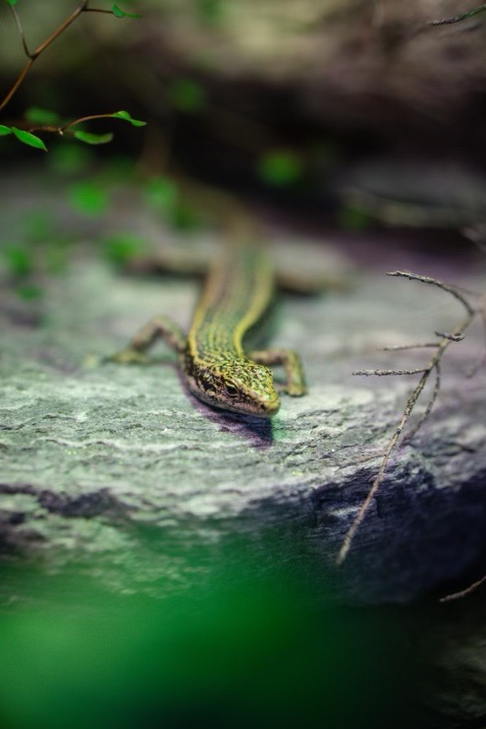

Home
Favourites
Astrophotography
Nature
Misc
About/contact
Domenik Photography
Welcome to Langbein Photography



Favourites
Astrology
selection of the best photos taken
photos of all types of the night sky
gap


Misc
Nature
Miscellaneous pictures of anything not in the other categories
Pictures of Flora and Fauna